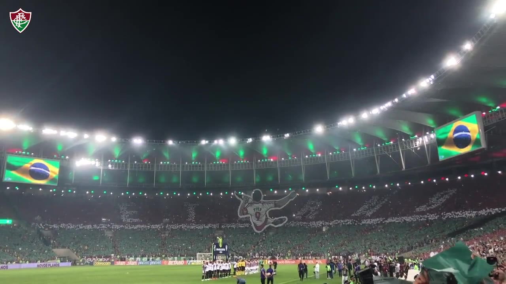
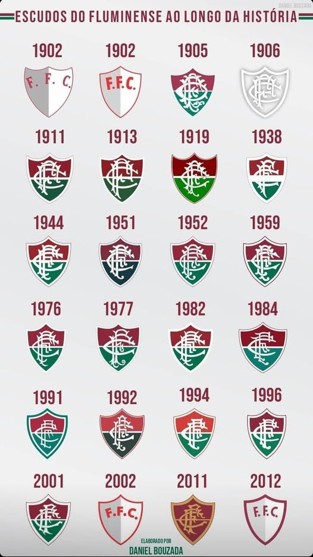

O Fluminense Football Club, fundado em 21 de julho de 1902, é uma das instituições esportivas mais tradicionais do Brasil e da América do Sul. Sua história confunde-se com a própria evolução do futebol no país, já que o clube foi pioneiro em diversas iniciativas que ajudaram a consolidar a prática do esporte em território nacional. Conhecido carinhosamente como Tricolor das Laranjeiras, o Fluminense construiu uma identidade marcada pela elegância, pela inovação e pelo amor à camisa, tornando-se referência de organização e de paixão pelo futebol. Ao longo de mais de um século, o Fluminense acumulou momentos de glória e conquistas expressivas, tanto em competições estaduais quanto nacionais e internacionais. O clube ostenta títulos importantes, como Campeonatos Cariocas, Campeonatos Brasileiros e a tão sonhada Copa Libertadores da América. Cada conquista é acompanhada de narrativas que engrandecem sua trajetória, seja pela excelência em campo, seja pelo apoio caloroso da sua torcida. Esses episódios consolidaram o clube como um verdadeiro patrimônio cultural do futebol brasileiro.
O Fluminense Football Club é um dos times mais tradicionais do Brasil e, ao longo de sua história centenária, colecionou ídolos que marcaram época e construíram a identidade tricolor. Esses jogadores e treinadores não apenas conquistaram títulos, mas também se tornaram símbolos de dedicação, talento e amor ao clube. A idolatria vai muito além das quatro linhas: ela está nos cantos das arquibancadas, nas lembranças da torcida e na inspiração que cada atleta deixou para as gerações futuras. O Fluminense é, acima de tudo, um time de grandes histórias, e cada ídolo representa um capítulo fundamental dessa trajetória gloriosa.
Fred é, sem dúvida, um dos nomes mais lembrados pelo torcedor nos últimos anos. Atacante de presença marcante dentro da área, ele chegou ao clube em 2009 e rapidamente caiu nas graças da torcida ao assumir o papel de líder e referência técnica. Com 199 gols, se tornou o segundo maior artilheiro da história do Fluminense e peça decisiva nas conquistas do Campeonato Brasileiro em 2010 e 2012. Além dos títulos, Fred conquistou o coração tricolor por sua postura fora de campo, sempre respeitosa e identificada com o clube. Sua despedida, em julho de 2022, foi marcada por um Maracanã lotado, em um espetáculo emocionante que simbolizou o tamanho de sua importância.
Entre os ídolos eternos do Fluminense, Rivellino e Castilho ocupam lugar de destaque. Rivellino, considerado um dos maiores meias da história do futebol brasileiro, chegou ao clube em 1975 após brilhar no Corinthians. Vestindo a camisa tricolor, foi o grande nome da histórica equipe da “Máquina Tricolor”, que encantou o país com seu futebol ofensivo e envolvente. Sua habilidade, visão de jogo e chutes potentes marcaram época, e mesmo sem conquistar títulos de grande expressão pelo clube, Rivellino se tornou um símbolo de genialidade e carisma. Já Castilho é lembrado como um dos maiores goleiros do futebol nacional, com mais de 695 partidas oficiais disputadas entre as décadas de 1940 e 1960. Sua trajetória inclui histórias lendárias, como a de ter atuado mesmo após perder parte de um dedo, exemplo de dedicação e amor ao Fluminense que o eternizou como ídolo máximo.
Nos ultimos anos, German Cano assumiu o posto de novo ídolo e ícone da torcida tricolor. O atacante argentino chegou em 2022 e, desde então, vem acumulando gols e quebrando recordes. Foi o artilheiro da Libertadores de 2023, com 13 gols, sendo peça decisiva no título continental inédito do clube, e já figura entre os maiores estrangeiros da história do Fluminense. Cano conquistou não apenas pelo desempenho técnico, mas também pela paixão demonstrada dentro de campo, sempre vibrando com a torcida e reforçando sua ligação com o Maracanã. Sua trajetória prova que a tradição de formar e celebrar ídolos no Fluminense segue viva, conectando passado e presente em uma linha contínua de conquistas e emoção.